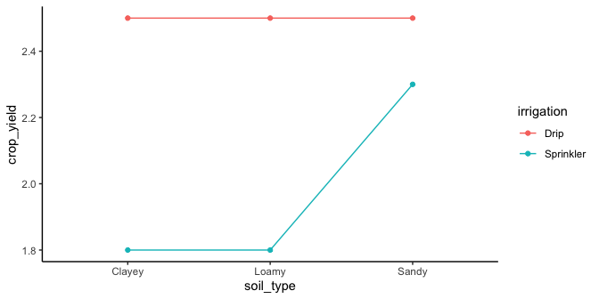
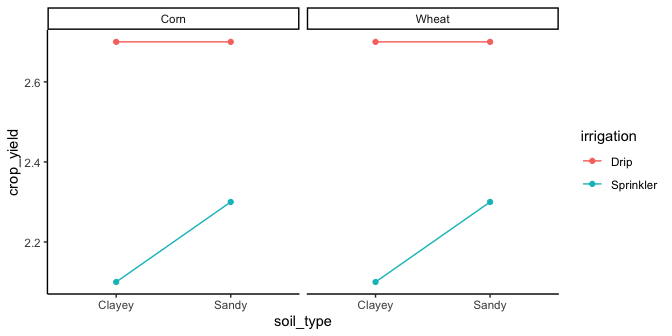

11 More On Factorial Designs
We are going to do a couple things in this chapter. The most important thing is more exposure to factorial designs. The second thing we do is show that you can mix it up with ANOVA. You already know that you can have more than one IV. And, you know that research designs can be between-subjects or within-subjects (repeated-measures). When you have more than one IV, they can all be between-subjects variables, they can all be within-subject repeated measures, or they can be a mix: say one between-subject variable and one within-subject variable. You can use ANOVA to analyze all of these kinds of designs. You always get one main effect for each IV, and a number of interactions, or just one, depending on the number of IVs.
11.1 Looking at main effects and interactions
Designs with multiple factors are very common. When you read a research article you will often see graphs that show the results from designs with multiple factors. It would be good for you if you were comfortable interpreting the meaning of those results. The skill here is to be able to look at a graph and see the pattern of main effects and interactions. This skill is important, because the patterns in the data can quickly become very complicated looking, especially when there are more than two independent variables, with more than two levels.
11.1.1 2x2 designs
Let’s take the case of 2x2 designs. There will always be the possibility of two main effects and one interaction. You will always be able to compare the means for each main effect and interaction. If the appropriate means are different then there is a main effect or interaction. Here’s the thing, there a bunch of ways all of this can turn out. Check out the ways, there are 8 of them:
- no IV1 main effect, no IV2 main effect, no interaction
- IV1 main effect, no IV2 main effect, no interaction
- IV1 main effect, no IV2 main effect, interaction
- IV1 main effect, IV2 main effect, no interaction
- IV1 main effect, IV2 main effect, interaction
- no IV1 main effect, IV2 main effect, no interaction
- no IV1 main effect, IV2 main effect, interaction
- no IV1 main effect, no IV2 main effect, interaction
OK, so if you run a 2x2, any of these 8 general patterns could occur in your data. That’s a lot to keep track of isn’t. As you develop your skills in examining graphs that plot means, you should be able to look at the graph and visually guesstimate if there is, or is not, a main effect or interaction. You will need you inferential statistics to tell you for sure, but it is worth knowing how to know see the patterns.
Figure 11.1 shows the possible patterns of main effects and interactions in bar graph form. Here is a legend for the labels in the panels.
- 1 = there was a main effect for IV1.
- ~1 = there was not a main effect for IV1
- 2 = there was a main effect for IV2
- ~2 = there was not a main effect of IV2
- 1x2 = there was an interaction
- ~1x2 = there was not an interaction
Figure 11.2 shows the same eight patterns in line graph form:
The line graphs accentuates the presence of interaction effects. Whenever the lines cross, or would cross if they kept going, you have a possibility of an interaction. Whenever the lines are parallel, there can’t be an interaction. When both of the points on the A side are higher or lower than both of the points on the B side, then you have a main effect for IV1 (A vs B). Whenever the green line is above or below the red line, then you have a main effect for IV2 (1 vs. 2). We know this is complicated. You should see what all the possibilities look like when we start adding more levels or more IVs. It gets nuts. Because of this nuttiness, it is often good practice to make your research designs simple (as few IVs and levels as possible to test your question). That way it will be easier to interpret your data. Whenever you see that someone ran a 4x3x7x2 design, your head should spin. It’s just too complicated.
11.2 Interpreting main effects and interactions
The interpretation of main effects and interactions can get tricky. Consider the concept of a main effect. This is the idea that a particular IV has a consistent effect. For example, drinking 5 cups of coffee makes you more awake compared to not drinking 5 cups of coffee. The main effect of drinking 5 cups of coffee vs not drinking coffee will generally be true across the levels of other IVs in our life. For example, let’s say you conducted an experiment testing whether the effect of drinking 5 cups of coffee vs not, changes depending on whether you are in your house or in a car. Perhaps the situation matters? No, probably not so much. You will probably still be more awake in your house, or your car, after having 5 cups of coffee, compared to if you hadn’t.
The coffee example is a reasonably good example of a consistent main effect. Another silly kind of example might be the main effect of shoes on your height. For example, if your IV was wearing shoes or not, and your DV was height, then we could expect to find a main effect of wearing shoes on your measurement of height. When you wear shoes, you will become taller compared to when you don’t wear shoes. Wearing shoes adds to your total height. In fact, it’s hard to imagine how the effect of wearing shoes on your total height would ever interact with other kinds of variables. You will be always be that extra bit taller wearing shoes. Indeed, if there was another manipulation that could cause an interaction that would truly be strange. For example, imagine if the effect of being inside a bodega or outside a bodega interacted with the effect of wearing shoes on your height. That could mean that shoes make you taller when you are outside a bodega, but when you step inside, your shoes make you shorter…but, obviously this is just totally ridiculous. That’s correct, it is often ridiculous to expect that one IV will have an influence on the effect of another, especially when there is no good reason.
The summary here is that it is convenient to think of main effects as a consistent influence of one manipulation. However, when an interaction is observed, this messes up the consistency of the main effect. That is the very definition of an interaction. It means that some main effect is not behaving consistently across different situations. Indeed, whenever we find an interaction, sometimes we can question whether or not there really is a general consistent effect of some manipulation, or instead whether that effect only happens in specific situations.
For this reason, you will often see that researchers report their findings this way:
“We found a main effect of X, BUT, this main effect was qualified by an interaction between X and Y”.
Notice the big BUT. Why is it there? The sentence points out that before they talk about the main effect, they need to first talk about the interaction, which is making the main effect behave inconsistently. In other words, the interpretation of the main effect depends on the interaction, the two things have to be thought of together to make sense of them.
Here are two examples to help you make sense of these issues:
11.2.1 A consistent main effect and an interaction
Figure 11.3 shows a main effect and interaction. There is a main effect of IV2: the level 1 means (red points and line) are both lower than the level 2 means (aqua points and line). There is also an interaction. The size of the difference between the red and aqua points in the A condition (left) is bigger than the size of the difference in the B condition.
How would we interpret this? We could say there WAS a main effect of IV2, BUT it was qualified by an IV1 x IV2 interaction.
What’s the qualification? The size of the IV2 effect changed as a function of the levels of IV1. It was big for level A, and small for level B of IV1.
What does the qualification mean for the main effect? Well, first it means the main effect can be changed by the other IV. That’s important to know. Does it also mean that the main effect is not a real main effect because there was an interaction? Not really, there is a generally consistent effect of IV2. The green points are above the red points in all cases. Whatever IV2 is doing, it seems to work in at least a couple situations, even if the other IV also causes some change to the influence.
11.2.2 An inconsistent main effect and an interaction

Figure 11.4 shows another 2x2 design. You should see an interaction here straight away. The difference between the aqua and red points in condition A (left two dots) is huge, and there is 0 difference between them in condition B. Is there an interaction? Yes!
Are there any main effects here? With data like this, sometimes an ANOVA will suggest that you do have significant main effects. For example, what is the mean difference between level 1 and 2 of IV2? That is the average of the green points ( (10+5)/2 = 15/2= 7.5 ) compared to the average of the red points (5). There will be a difference of 2.5 for the main effect (7.5 vs. 5).
Starting to see the issue here? From the perspective of the main effect (which collapses over everything and ignores the interaction), there is an overall effect of 2.5. In other words, level 2 adds 2.5 in general compared to level 1. However, we can see from the graph that IV2 does not do anything in general. It does not add 2.5s everywhere. It adds 5 in condition A, and nothing in condition B. It only does one thing in one condition.
What is happening here is that a “main effect” is produced by the process of averaging over a clear interaction.
How would we interpret this? We might have to say there was a main effect of IV2, BUT we would definitely say it was qualified by an IV1 x IV2 interaction.
What’s the qualification? The size of the IV2 effect completely changes as a function of the levels of IV1. It was big for level A, and nonexistent for level B of IV1.
What does the qualification mean for the main effect? In this case, we might doubt whether there is a main effect of IV2 at all. It could turn out that IV2 does not have a general influence over the DV all of the time, it may only do something in very specific circumstances, in combination with the presence of other factors.
11.3 Mixed Designs
Throughout this book we keep reminding you that research designs can take different forms. The manipulations can be between-subjects (different subjects in each group), or within-subjects (everybody contributes data in all conditions). If you have more than one manipulation, you can have a mixed design when one of your IVs is between-subjects and one of the other ones is within-subjects.
The only “trick” to these designs is to use the appropriate error terms to construct the F-values for each effect. Effects that have a within-subjects repeated measure (IV) use different error terms than effects that only have a between-subject IV. In principle, you could run an ANOVA with any number of IVs, and any of them good be between or within-subjects variables.
Because this is an introductory textbook, we leave out a full discussion on mixed designs. What we are leaving out are the formulas to construct ANOVA tables that show how to use the correct error terms for each effect. There are many good more advanced textbooks that discuss these issues in much more depth. And, these things can all be Googled. This is a bit of a cop-out on our part, and we may return to fill in this section at some point in the future (or perhaps someone else will add a chapter about this).
In the lab manual, you will learn how to conduct a mixed design ANOVA using software. Generally speaking, the software takes care of the problem of using the correct error terms to construct the ANOVA table.
11.4 More complicated designs
Up until now we have focused on the simplest case for factorial designs, the 2x2 design, with two IVs, each with 2 levels. It is worth spending some time looking at a few more complicated designs and how to interpret them.
11.4.1 2x3 design
In a 2x3 design there are two IVs. IV1 has two levels, and IV2 has three levels. Typically, there would be one DV. Let’s talk about the main effects and interaction for this design.
First, let’s make the design concrete. Let’s imagine we are running a memory experiment. We give people some words to remember, and then test them to see how many they can correctly remember. Our DV is proportion correct. We know that people forget things over time. Our first IV will be time of test, immediate vs. 1 week. The time of test IV will produce a forgetting effect. Generally, people will have a higher proportion correct on an immediate test of their memory for things they just saw, compared to testing a week later.
We might be interested in manipulations that reduce the amount of forgetting that happens over the week. The second IV could be many things. Let’s make it the number of time people got to study the items before the memory test, once, twice or three times. We call IV2 the repetition manipulation.
We might expect data like shown in Figure 11.5:

The figure shows some pretend means in all conditions. Let’s talk about the main effects and interaction.
First, the main effect of delay (time of test) is very obvious, the red line is way above the aqua line. Proportion correct on the memory test is always higher when the memory test is taken immediately compared to after one week.
Second, the main effect of repetition seems to be clearly present. The more times people saw the items in the memory test (once, twice, or three times), the more they remembered, as measured by increasingly higher proportion correct as a function of number of repetitions.
Is there an interaction? Yes, there is. Remember, an interaction occurs when the effect of one IV depends on the levels of an another. The delay IV measures the forgetting effect. Does the size of the forgetting effect change across the levels of the repetition variable? Yes it does. With one repetition the forgetting effect is .9-.6 =.4. With two repetitions, the forgetting effect is a little bit smaller, and with three, the repetition is even smaller still. So, the size of the forgetting effect changes as a function of the levels of the repetition IV. There is evidence in the means for an interaction. You would have to conduct an inferential test on the interaction term to see if these differences were likely or unlikely to be due to sampling error.
If there was no interaction and no main effect of repetition, we would see something like the pattern in Figure 11.6.

What would you say about the interaction if you saw the pattern in Figure 11.7?

The correct answer is that there is evidence in the means for an interaction. Remember, we are measuring the forgetting effect (effect of delay) three times. The forgetting effect is the same for repetition condition 1 and 2, but it is much smaller for repetition condition 3. The size of the forgetting effect depends on the levels of the repetition IV, so here again there is an interaction.
11.4.2 2x2x2 designs
Let’s take it up a notch and look at a 2x2x2 design. Here, there are three IVs with 2 levels each. There are three main effects, three two-way (2x2) interactions, and one 3-way (2x2x2) interaction.
We will use the same example as before but add an additional manipulation of the kind of material that is to be remembered. For example, we could present words during an encoding phase either visually or spoken (auditory) over headphones.

Figure 11.8 has two panels one for auditory and one for visual. You can think of the 2x2x2, as two 2x2s, one for auditory and one for visual. What’s the take home from this example data? We can see that the graphs for auditory and visual are the same. They both show a 2x2 interaction between delay and repetition. People forgot more things across the week when they studied the material once, compared to when they studied the material twice. There is a main effect of delay, there is a main effect of repetition, there is no main effect of modality, and there is no three-way interaction.
What is a three-way interaction anyway? That would occur if there was a difference between the 2x2 interactions. For example, consider the pattern of results in Figure 11.9.

We are looking at a 3-way interaction between modality, repetition and delay. What is going on here? These results would be very strange, here is an interpretation.
For auditory stimuli, we see that there is a small forgetting effect when people studied things once, but the forgetting effect gets bigger if they studies things twice. A pattern like this would generally be very strange, usually people would do better if they got to review the material twice.
The visual stimuli show a different pattern. Here, the forgetting effect is large when studying visual things once, and it get’s smaller when studying visual things twice.
We see that there is an interaction between delay (the forgetting effect) and repetition for the auditory stimuli; BUT, this interaction effect is different from the interaction effect we see for the visual stimuli. The 2x2 interaction for the auditory stimuli is different from the 2x2 interaction for the visual stimuli. In other words, there is an interaction between the two interactions, as a result there is a three-way interaction, called a 2x2x2 interaction.
We will note a general pattern here. Imagine you had a 2x2x2x2 design. That would have a 4-way interaction. What would that mean? It would mean that the pattern of the 2x2x2 interaction changes across the levels of the 4th IV. If two three-way interactions are different, then there is a four-way interaction.
11.5 Real Data
Consider an example where a researcher is testing the effects of metal contamination on the number of species found in sessile marine invertebrates (sponges, bryozoans and sea squirts etc.). They would like to know whether copper reduces species richness, but also know that the richness of invertebrates can depend on whether the substrate is vertical or horizontal. Consequently, they ran an experiment where species richness was recorded in replicate samples in each of the six combinations of copper enrichment (“None”,“Low”,“High”) and orientation (“Vertical”,“Horizontal”).
The factorial ANOVA will test:
* whether there are any differences in richness among the three levels of copper enrichment
* whether there are any differences in richness among the two levels of substrate orientation
* whether there is any interaction between copper and orientation
You have three null hypotheses:
* there is no difference between the means for each level of copper, Ho: \(\mu_{None} = \mu_{Low} = \mu_{High}\)
* there is no difference between the means for each level of orientation, $Ho: \(\mu_{Vertical} = \mu_{Horizontal}\)
* there is no interaction between the factors
This is far better than running two separate single factor ANOVAs that contrast copper effects for each level of orientation because you have more statistical power (higher degrees of freedom) for the tests of interest, and you get a formal test of the interaction between factors which is often scientifically interesting.
Note that an ANOVA is a linear model, just like linear regression except that the predictor variables are categorical rather than continuous. With two predictor variables, the linear model is:
\[y_{ijk} = \mu + \alpha_i + \beta_j + (\alpha\beta)_{ij} + \varepsilon_{ijk}\]
where \(\mu\) is the overall mean, \(\alpha_i\) is the effect of the ith group of the first factor, and \(\beta_i\) is the effect of the jth group of the second factor and \((\alpha\beta)\) is the interaction.
Athough we have two factors, and an interaction effect, this requires fitting more than 3 parameters in our model because we have 3 levels of Factor A (Copper) and 2 levels of Factor B (Orientation) (if you can figure out how many parameters must be fit in this model, you are officially a stats geek! This is tricky even for those ‘in the know’).
With two factors, ANOVA partitions the total variance into a component that can be explained by the first predictor variable (among levels of the treatment A), a component that can be explained by the second predictor variable (among levels of the treatment B), a component that can be explained by the interaction, and a component that cannot be explained (within levels, the residual variance). The test statistic, F, is calculated three times to test each of the null hypotheses. For two fixed factors, the F ratios are:
\[F = \frac{MS_{A}}{MS_{within}}\] \[F = \frac{MS_{B}}{MS_{within}}\] \[F = \frac{MS_{AB}}{MS_{within}}\]
where MS are the mean squares, a measure of variation. The probability of obtaining the observed value of F is calculated from the known probability distribution of F, with two degrees of freedom (one for the numerator = the number of levels -1) and one for the denominator. Note that these F ratios will change if any factors are random (see below for the distinction between fixed and random factors),
11.5.1 Running the analysis
Your data should be formatted with the measurements from each replicate as a row and each of the variables as columns, corresponding to the dependent variable y, Factor A and Factor B.
We’ll download a sample data set for sessile invertebrates and import into R to to see the desired format. Check that your predictor variables are factors with the function str
With our predictor variable correctly assigned as factors, we can now run the analysis. As with other forms of linear models we have a model formula with the dependent variable, y, to the left of the ~ and the predictor variables to the right. For this two factor design, we use:
Note that when you specify a model with * between the two predictors, R automatically includes both variables and their interaction. This same model could also be written as:
The output from this analysis can be seen by using the summary function on the object created.
Exactly the same model can also be run using the linear model function, lm.
11.5.2 Interpreting the results
#> Df Sum Sq Mean Sq F value Pr(>F)
#> Copper 2 3330 1665.0 192.53 < 2e-16 ***
#> Orientation 1 240 240.0 27.75 2.46e-06 ***
#> Copper:Orientation 2 571 285.4 33.00 4.34e-10 ***
#> Residuals 54 467 8.6
#> ---
#> Signif. codes: 0 '***' 0.001 '**' 0.01 '*' 0.05 '.' 0.1 ' ' 1The summary output of an ANOVA object is a table with the degrees of freedom (Df), sums of squares (Sum Sq), mean squares (Mean Sq) for the each of predictor variable (i.e., variation among levels of your treatments), their interaction and for the Residuals (i.e., varation within the levels). The test statistic, F value and its associated p-value (Pr(>F)) are also presented.
Check that you have the correct degrees of freedom. For a two factor design with fixed factors they are:
* Factor A: a - 1 (where a = number of levels of Factor A)
* Factor B: b - 1 (where b = number of levels of Factor B)
* Interaction (AB): (a-1)(b-1)
* Residual: ab(n -1) (where n = sample size)
The sums of squares and mean squares are measures of variation. There are three F statistics, corresponding to a test of each of the main effects and one for the interaction. The p-values are the probabilities of the observed F values from the F distribution (with the given degrees of freedom).
In this example, there is strong evidence to reject all three null hypotheses:
* that all levels of the copper treatment are equal (P < 0.001),
* that the vertical and horizontal orientations are equal (P < 0.001)
* that there is no interaction between copper and orientation (P < 0.001)
A significant interaction means that the effect of one factor depends upon the other. In this example, it would mean that the effect of copper was not consistent between the vertical and horizontal habitats. Consequently, the interpretation of the main effects becomes more complex. See Understanding interactions for more help on interpreting interactions in linear models. A quick way to help you understand an interaction if you get one is to examine an interactions plot.

Here you can see that the effect of copper (a decline in species richness) is more pronounced in the habitats with a vertical orientation, and that the difference between the two habitats changes with exposure to copper.
Multiple comparisons. If you detect any significant differences in the ANOVA, we are then interested in knowing exactly which levels differ from one another, and which do not. Remember that a significant p value in the test you just ran would reject the null hypothesis the means were the same across all groups, but not identify which were different from each other. If there is no interaction, you can run a post-hoc test on each of the main effects (only needed if there are more than two levels for an effect). If there is an interaction, you will need to consider post-hoc tests that contrast the means from all combinations of both factors.
11.5.3 Assumptions to check
The assumptions of factorial ANOVA’s are the same as for all linear models including the simpler one-way ANOVA’s (see ANOVA: single factor), being independence, normality and homogeneity of variances. We also need to consider two new issues: 1) whether your factors are fixed or random, and 2) whether your sampling or experimental design is balanced (i.e., has the same number of replicates in each combination of treatments).
Fixed and random factors. There is an important distinction between factors whose levels are the only ones of interest (termed fixed), and factors whose levels are a sampled from a larger collection of possible levels (termed random). For example, if we repeated the experiment above at three different sites in Sydney Harbour, chosen from many possible sites, we would consider site a random factor. We are not interested in those sites in particular, but would like to know if our experimental treatments were consistent across sites. On the other hand, if you were only interested in Darling Harbour and Circular Quay, then these two could be considered two levels of a fixed factor. Treating sites as a fixed factor in that case means that you conclusions should not be extrapolated to other possible sites, but restricted to those particular sites.
Statistically, there is a big difference between a fixed factors were you have measured all possible levels of interest (e.g, control vs a single treatment) and random factors where the levels are sampled from all possible levels. In analysis of variance, all this matters because the F tests that are being used to test your hypotheses are constructed differently depending on which factors are fixed and random. In the example above, all factors were fixed and the denominator of all F tests was \(MS_{within}\). In models with all factors random, and models with a mix of fixed and random factors (termed mixed effects models), other components of the variation are used as the denominators in the F tests.
If you have random factors, you will need to read more than this help page to establish the correct F ratios for your design, and you may need to calculate them manually. Note that the code presented will give correct F tests only for designs with all factors fixed. You should also strongly consider analysing your data as a mixed model
Balanced and unbalanced designs. Ideally, factorial ANOVA should be conducted with a balanced design - one with the same number of replicates in each combination of factors. Balanced designs are less likely to be affected by minor deviations from the assumptions of normality and homogeneity of variance. Unfortunately, unbalanced designs where you have unequal numbers of replicates for each level are common in practice (e.g. bad weather prevented sampling the second site as intensively, volunteer lost the data sheet etc!).
Unbalanced designs are more susceptible to violating the assumptions of ANOVA and there is no single way to partitioning the \(SS_{total}\) into the main effect and interaction components. The aov and lm functions in R use what are called Type I sums of squares where the terms in the model are fitted sequentially (i.e., how much variation is explained by factor A, then how much additional variation is explained by adding factor B). This means that the order of the terms in model matters: the model formulae Y ~ A + B + A:B and Y ~ B + A + B:A will give you different results.
There is a fair bit of debate on this in the statistical literature, but many advise using what are called Type II or Type III sums of squares for unbalanced designs. Other software packages like SPSS, SYSTAT and Minitab will automatically use Type III sums of squares where the order of terms in the model doesn’t matter. To access these in R, we can use the Anova function in the car package.
Normality. The assumption of normality can be checked by a frequency histogram of the residuals or by using a quantile plot where the residuals are plotted against the values expected from a normal distribution. The histogram of residuals should follow a normal distribution. If the points in the quantile plot lie mostly on the line, the residuals are normally distributed. Both of these plots can be obtained from the model object created by the aov function.

Violations of normality can be fixed via transformations or by using a different error-distribution in a generalised linear model (GLM).
Homogeneity of variance. The assumption of homgeneity of variance, namely that the variation in the residuals is approximately equal across the range of the predictor variable, can be checked by plotting the residuals against the fitted values from the aov model object.

Heterogeneous variances are indicated by non-random pattern in the residuals vs. fitted plot. Look for an even spread of the residuals on the y axis for each of the levels on the x axis. A fan-shaped distribution with more variance at higher values on the x axis is a common problem when data are skewed. See the testing assumptions of linear models module for more information. If there are strong patterns, one potential solution is to transform the response variable y. If this doesn’t fix the problem the best solution is to use a different error distribution in a generalised linear model (GLM).
Independence. ANOVA assumes that all replicate measures are independent of each other (i.e., equally likely to be sampled from the population of possible values for each level). This issue needs to be considered at the design stage. If data are grouped in any way (e.g., half the invertebrate samples measured at one time, then the other half measured later), then more complex designs are needed to account for additional factors (e.g., a design with an additional factor of sampling time).
There are a variety of measures for dealing with non-independence. These include ensuring all important predictors are in the model; averaging across nested observations; or using a mixed model
11.5.4 Communicating the results
Written. The results of the main effects and any interaction should be described in the text of a results section. Each F test can be described in the text, e.g., “The copper treatment and substrate orientation interacted to affect the species of sessile invertebrates (F = 19.33, df = 2,54, p < 0.001)”. Alternatively, all tests could be put into a Table like the one given in the output following summary(Sessile.aov) above. Description of the main tests would be followed by a description of the post-hoc results if used.
Remember that the interpretation of the main effects is complicated when there is a significant interaction (see above). In this example, while copper reduced species richness, that effect was not consistent between the two habitats. In other scenarios with an interaction, you might have copper affecting richness in one habitat but not another, preventing you making a simple statement like “copper reduced species richness” because it wouldn’t always be true.
Visual. A boxplot or column graph with error bars are suitable for contrasting a continuous variable across levels of categorical variable. See the graphing modules for making publication ready versions of these figures.